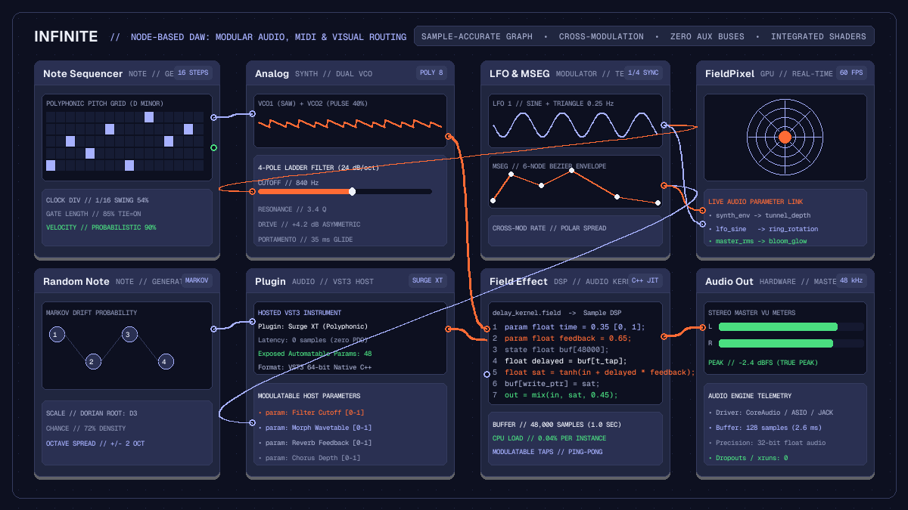

Creative
Node-based DAW workflows: modular audio routing on an infinite canvas
Explore node-based DAW workflows in Infinite: wire synths, route MIDI into generative sequencers, and patch audio directly into live visual shaders.

on this page
- The architecture of a node-based DAW
- Generative MIDI note routing and transformation
- Multi-timbral sound generation and VST3 hosting
- Complex modulation topologies without aux buses
- Crossing the boundary: audio directly into live shaders
- Practical patching: building an ambient generative patch
- Honest limits: when a timeline DAW remains preferable

Conventional digital audio workstations structure musical composition around a rigid metaphor: horizontal timeline tracks flowing into vertical mixer channel strips. This architecture has powered music production for decades, yet it imposes artificial boundaries when working with complex generative systems, non-linear modulation, or multi-sensory performances. Routing a synthesiser output into an effects send, tapping intermediate filter states, or modulating an external parameter requires creating auxiliary buses, sidechain configurations, and hidden routing matrices.
A node based DAW replaces track strips with an open visual canvas. Instead of confining sound generators and processors to sequential channel slots, every element exists as an independent node whose inputs and outputs can be freely cabled together. Signals branch, merge, feedback, and modulate across arbitrary topologies without requiring dedicated bus channels.
In Infinite, this modular paradigm extends beyond audio. Audio DSP kernels, MIDI generators, VST3 plugin instruments, and real-time GPU shaders share the same sample-accurate graph. This architecture allows electronic musicians and creative coders to build generative soundscapes and responsive visuals within a single environment.
The architecture of a node-based DAW
Traditional audio workstations evaluate signal paths hierarchically: individual clips schedule events along a timeline, tracks accumulate instrument and insert plugin outputs, and aux channels sum multiple track streams into master stems. In contrast, a node-based DAW represents your entire project as a directed graph.
Every node in the graph exposes typed connection pins:
- Note pins: Carry polyphonic note events, timing ticks, velocity values, and microtonal pitch offsets.
- Audio pins: Stream multi-channel 32-bit floating-point audio buffers evaluated at the hardware sample rate (such as 44.1 kHz or 48 kHz).
- Modulation pins: Transmit continuous control values, envelope followers, and low-frequency oscillations evaluated per block or per sample.
- Visual pins: Pass GPU texture handles, 3D geometry buffers, and shader uniforms.
During each audio engine block, Infinite topologically sorts the graph to establish execution order. Nodes with zero incoming audio dependencies render first, pushing their buffers forward along output cables to downstream processors. Because routing is explicit, parallel signal paths execute concurrently on multi-core processors without phase drift or unintended latency penalties.
Generative MIDI note routing and transformation
In a linear DAW, polyphonic note data typically originates from a recorded MIDI clip or an external keyboard controller assigned to a single track. In a node-based environment, note streams become dynamic data pipelines that can be divided, filtered, and transformed mathematically before reaching an instrument.
Consider building an evolving ambient arpeggio. Instead of hand-drawing notes on a piano roll, you can construct a generative note network:
- Place a
Note Sequencernode to establish a rhythmic pulse. Set the clock division to a sixteenth-note division with subtle swing. - Cable the note output into a
Random Note Generatorset to a Markov chain drift algorithm. Constrain the output to a specific musical scale, such as D Dorian or F Lydian. - Branch the resulting note stream into two parallel paths:
- The first path cables directly into a
KeyboardorNote Filternode set to pass only root notes and fifths down to a bass voice. - The second path routes through an
Arpeggiatorand aQuantizernode, shifting pitches across two octaves to generate floating melodic lines.
Because notes travel along visual patch cables, adding a Note Delay or Note Strum node requires only dropping the module between pins. You can inspect the active pitch and velocity data at every junction without digging through nested inspector menus. For a comprehensive walkthrough of available sequencing modules, consult our generative sequencing guide.
Multi-timbral sound generation and VST3 hosting
Once MIDI note streams are generated, they route directly into sound sources. Infinite provides native sound generators alongside full support for third-party instruments:
Analog: A dual-oscillator subtractive synthesiser featuring continuously morphable saw, pulse, and triangle waveforms, followed by a resonant 4-pole lowpass ladder filter and soft-clipping saturation.FM: A multi-operator frequency modulation engine capable of generating bright metallic textures, complex bell spectra, and punchy electric basslines.Wavetable: A multi-frame wavetable synthesiser supporting spectral scanning and custom wave extraction.GranularandPaulStretch: Spectral time-stretching and granular sample scrubbers for ambient sound design.Plugin: A native 64-bit VST3 and AU hosting container that opens external commercial synthesiser instruments and effects.
Unlike conventional plugin wrappers that conceal parameter automation inside automation lanes, the Plugin node exposes its internal controls directly as patch pins. If you host a complex synthesiser such as Surge XT or Vital, you can expose controls such as filter cutoff, wavetable position, and delay feedback as modulatable inputs on the node face. Any native modulator on your canvas can then drive those parameters directly.
To explore the sonic architecture of each built-in instrument, read our detailed Infinite sound design guide.
Complex modulation topologies without aux buses
Modulation routing in traditional workstations is often restricted. LFOs and envelopes are usually trapped inside the instrument that generated them, while DAW-level parameter automation requires tedious point-and-click curve editing.
In a node-based DAW, modulators are first-class canvas citizens. A single LFO node can branch its output cable to twenty destinations at once. You can route an LFO to:
- Modulate the filter cutoff of an
Analogsynth. - Sweep the wavetable index of a
Wavetablenode. - Modulate the delay time parameter of a hosted VST3 chorus plugin.
- Adjust the camera distance of a 3D visual render.
Furthermore, modulators can modulate other modulators. Routing a slow, non-synchronised Random noise node into the rate pin of an LFO creates organic, non-repeating movements that mimic analogue hardware instability. Passing an envelope through a Math node enables arithmetic operations: invert the curve, multiply by a depth scalar, or add a constant bias before reaching the destination pin.
Multi-segment envelope generators (MSEG) provide complex multi-breakpoint modulation curves that can be triggered by note events or looped freely as custom LFO shapes.
Crossing the boundary: audio directly into live shaders
The most distinctive capability of a unified node-based DAW is the elimination of the barrier between music production and live visual art.
In typical audiovisual production rigs, an artist runs Ableton Live or Bitwig Studio on one computer, transmits audio or MIDI over an interface, and captures it inside TouchDesigner, Resolume, or Notch on another machine. This split creates latency, requires managing multiple software licences, and restricts cross-talk between sound and image.
Infinite unites both worlds on a single canvas. The same engine that computes audio blocks also manages GPU rendering. You can take an audio cable directly from the output of an Analog synthesiser, an Audio Analyze FFT node, or an envelope follower and plug it directly into a visual parameter:
- Add a
FieldPixelnode to the canvas. - In the Field language code editor, declare modulatable parameters:
``glsl param float bass = 0.0 [0, 1]; param float resonance = 0.0 [0, 1]; ``
- Cable the low-frequency output of
Audio Analyzeintobass. - Cable the filter envelope of your synthesiser into
resonance.
The GPU compiles the Field expression into native GLSL shaders that execute at 60 frames per second. Visual geometries deform in exact synchronisation with acoustic transients. Because audio analysis happens in-process within shared memory, visual reaction occurs on the exact frame of the audio onset. To learn more about authoring GPU fragment shaders in Field, consult our tutorial on audio-reactive GLSL shaders.
Practical patching: building an ambient generative patch
To experience the speed of node-based music creation, follow this five-minute patching workflow:
Step 1: Note generation
Create a Clock node set to 110 BPM. Cable its output into a Note Sequencer. Configure an 8-step sequence using notes from the C minor pentatonic scale (C3, Eb3, F3, G3, Bb3). Connect the output to a Note Strum node to add subtle timing humanisation.
Step 2: Dual synthesis engines
Add an Analog node and a FM node. Split the note cable from Note Strum into both synthesisers.
- On
Analog, select a warm saw oscillator with a warm 12 dB lowpass filter. - On
FM, set operator frequency ratios to 1:2 to produce glass-like harmonic overtones.
Step 3: Spatial effects and summing
Add a Mixer node with four stereo channels. Route the audio output of Analog into Channel 1, and FM into Channel 2. Adjust pan positions slightly left and right to build stereo width.
Route the mixer master output into a Field Effect node loaded with an algorithmic stereo delay script. Set delay times to dotted eighth and dotted sixteenth intervals, with 45 percent feedback.
Step 4: Canvas modulation
Add an LFO node set to a slow sine wave at 0.1 Hz. Cable its output to:
- Channel 1 filter cutoff on
Analog. - FM modulation index on
FM. - Delay feedback on
Field Effect.
Your patch now breathes autonomously, shifting between warm analogue bass tones and crystalline FM chimes.
Step 5: Visual feedback
Finally, add an Audio Analyze node connected to the master output. Route the low band output into a FieldPixel generative visual tunnel. Route the final graphic to an Output node to project the visual in full screen on an external display or projector.
You can download ready-made modular patches, synthesiser presets, and audio-reactive shaders from the Infinite Library.
Honest limits: when a timeline DAW remains preferable
While a node-based architecture offers unmatched flexibility for modular synthesis, generative composition, and audiovisual integration, it is not always the most suitable tool for every project:
- Large multitrack vocal and acoustic recording: Tracking forty live audio microphones, comping vocal takes, and editing audio phase alignments across multitrack drum kits is faster in a linear timeline DAW such as Logic Pro, Cubase, or Pro Tools.
- Proprietary AAX ecosystem: Infinite does not support proprietary Avid AAX plugins. Pro Tools studio environments requiring AAX DSP hardware interfaces cannot run those plugins inside Infinite.
- Headless mode hardware limits: While Infinite provides a headless command-line interface for automated rendering and batch validation, headless execution deliberately refuses patches containing live microphone capture or hardware MIDI inputs with exit code 4. Live interactive hardware inputs require running the graphical application interface.
- Young ecosystem: Infinite is a modern, open-source project licensed under MIT. While rapidly expanding with regular updates, its library of third-party templates is still developing compared to software platforms that have existed for two decades.
For generative music, modular sound design, live algorithmic performance, and integrated audiovisual art, a node-based DAW provides an inspiring and unconstrained creative environment.